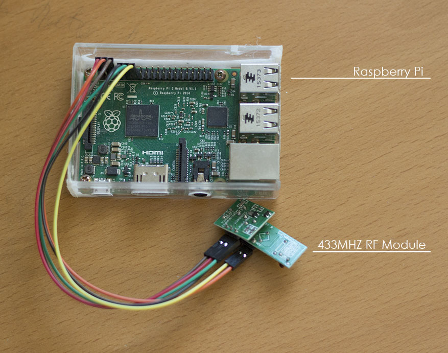

This is a project I completed in summer 2016 which used a Raspberry Pi as a signal to control lights wirelessly. Additionally, I used crontab to implement a feature which turned the lights on and off automatically and specified times.
The basic materials for the projct consisted of a lamp, a wireless power outlet, and the Raspberry Pi with a 433MHz signal sender/receiver module. Software wise, Raspbian OS was installed on the Pi. 433MHz RF transmitter and receivers were connected to the Raspberry Pi through GPIO pins, allowing the Pi to send and receive signals to and from the wireless power outlet. To make this functionality useful, RFSniffer was used to detect the signals used by the wireless power outlet. The wireless power outlet was plugged into a wall outlet, and the lamp was plugged into the wireless power outlet. Signals could then be output by the Pi to turn the power outlet on and off, which fully implements the wireless power outlet feature. This project saw several applications around the house. It was used to automatically turn on and off an LED house number display that was outside the house at specific hours, saving electricity. Also, it was used to automatically turn on and off Christmas lights at peak hours when the holidy season came around.